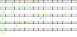

C++ Training
Session 3
Cyril Pichard
Session 3
Today
- Implement enigma
- Debug and profile
Enigma implementation
Last time
#include "enigma.h"
int main(int argc, const char **argv) {
const char *word = nullptr;
const char *result = nullptr;
encrypt(word, result);
return 0;
}
What we have to do:
- Get the phrase to encrypt from the command line
- Allocate memory for result
- Implement the encrypt cipher function
- Print the result
Pointers on pointers
Getting the phrase from the command line
int main(int argc, const char **argv) {
std::cout << argc << std::endl;
std::cout << argv << std::endl;
}- argc is the number of parameter passed in the command line
- argv is a pointer on pointer (const char **argv)
- a pointer on an array of strings
Pointers on pointers



int main(int argc, const char **argv) {
std::cout << argv << std::endl;
std::cout << argv[0] << std::endl;
}Loops: for
for(initialisation; condition; update) {
// do something
}
// Range based loop C++11
for (auto i: vec) {
}- initialisation: first time when the loop is entered
- condition: continue the loop if true
- update: at the end of the loop
For loop
Examples:
for(int i=0; i<20; i++) {
// do something
}
for(int i=0, int j=10; i<20; i++, j--) {
// do something
}- Your turn !
- in the main function
- write code that iterates on the input arguments (use argc)
- note that argv[0] is the name of the program
For loop
int main(int argc, const char **argv) {
for(int i=1; i<argc; i++) {
std::cout << argv[i] << std::endl;
// result ???
encrypt(argv[i], result);
}
}- We now want to allocate a buffer to put the result in
- Size ?
- Same a argv[i]
- Count the number of characters in argv[i]
While loop
while(condition) {
// do something
}
do {
// do something
} while(condition)
- iterate until condition becomes false
While loop
int main(int argc, const char **argv) {
for(int i=1; i<argc; i++) {
int nchar = 0; // number of characters
while(/*insert code here*/) {
/*insert code here*/
};
/*allocate result here*/
encrypt(argv[i], result);
}
}
- Your turn ! count the characters
- the end of the string is 0 or ‘\0’
Allocating result
int main(int argc, const char **argv) {
for(int i=1; i<argc; i++) {
int nchar = 0;
while(argv[i][nchar] != '\0') nchar++;
char result[nchar]; // can you spot the mistake ?
encrypt(argv[i], result);
}
}- size of string buffer is nchar+1 accounting for ‘\0’
Encrypt function
void encrypt(const char *src, char *result) {
// assume src and result have the same size
// iterate on the characters and apply a cipher function
}
- alphabet shift function
- use ascii encoding
Ascii

- ascii: letter maps to a value
Alphabet shift
char arithmetic
// char are values
char new_letter = 'a' + 3;
std::cout << new_letter << std::endl;
auto new_lettre = 'a' + 3; // new_lettre takes the type of 3 (int)
std::cout << new_lettre << std::endl;
- char is a number (ascii) but is intepreted as letter
- Can store values ranging from -128 to 127 (1 byte)
- Overflow ?? yes ! try multiplying 2 char = 100
Alphabet shift
Modulo Operator
// Modulo operator : %
std::cout << 10 % 3 << std::endl;
- Modulo operator %
- returns the remainder of a division, after one number is divided by another
- useful to cycle on a range
- Your turn, write a cipher function
A possible encrypt function
void encrypt(const char *src, char *dst) {
int key = 6;
int index = 0;
while (src[index] != '\0') {
dst[index] = (((src[index]-'a') + key) % 26) + 'a';
index++;
};
}
- An int in the function converts char to int
- Can we get rid of index ?
Using pointers to iterate
void encrypt(const char *src, char *dst) {
int key = 6;
while (*src != '\0') {
*dst = (((*src-'a') + key) % 26) + 'a';
src++; dst++;
};
}
- Pointers are also variables
- Pointer arithmetic
- inc, dec, soustraction
- sizeof the pointed type
Pointers to iterate
TODO: schema
Print the result
int main(int argc, const char **argv) {
for(int i=1; i<argc; i++) {
int nchar = 0;
while(argv[i][nchar] != '\0') nchar++;
char result[nchar]; // did you spot the mistake ?
encrypt(argv[i], result);
std::cout << result << " ";
}
return 0;
}
Running the program
./enigma hello world- Seems good !
./enigma bonjoure world- Wait … a bug ???
Debug and profile
Debugger and profilers
- C++ allows memory errors, overflow, etc
- Debuggers: gdb, lldb, visual studio c++
- Profilers: perf, valgrind, vtune, …
Profiling enigma
- Compile your code with symbols
- adds the function names and position in the machine code
- option ‘-g’ in gcc = debug option
valgrind enigma hello worldDebugging enigma
Interactive Debugging Session
gdb enigma
run hello world- breakpoint
- running gdb
- printing/displaying data
- TUI
Next time
- Static Dynamic libraries
- Call enigma functions from python
- cmake basics, add gtest
- TODO: prepare the decrypt function